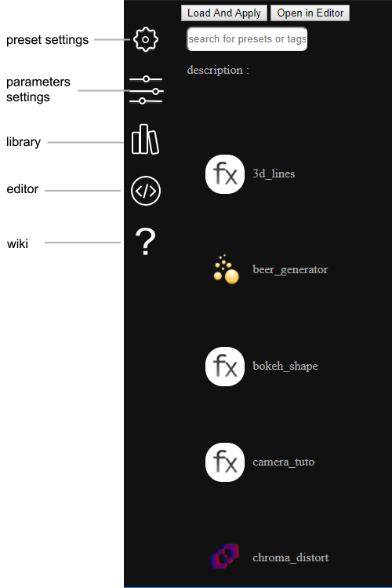
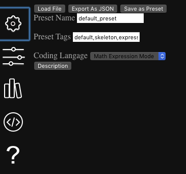
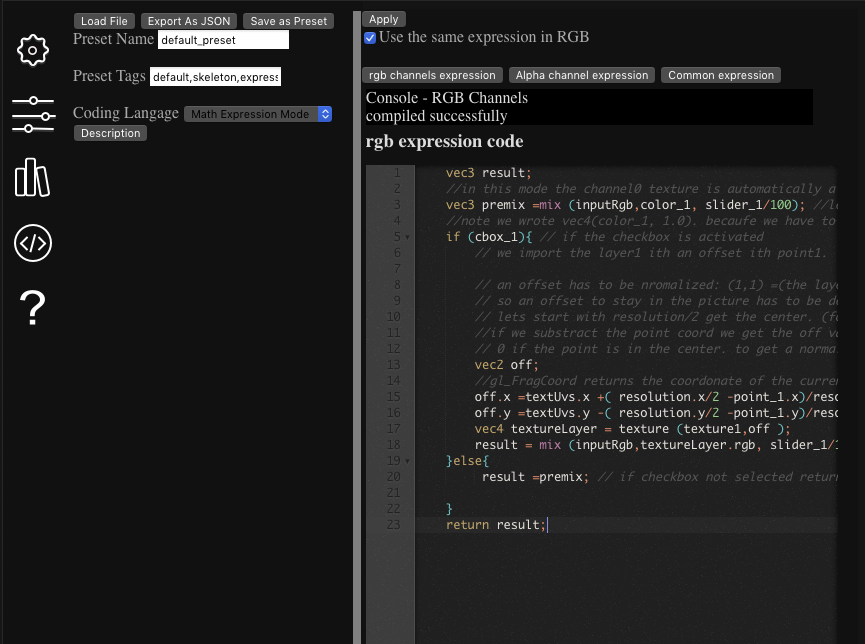
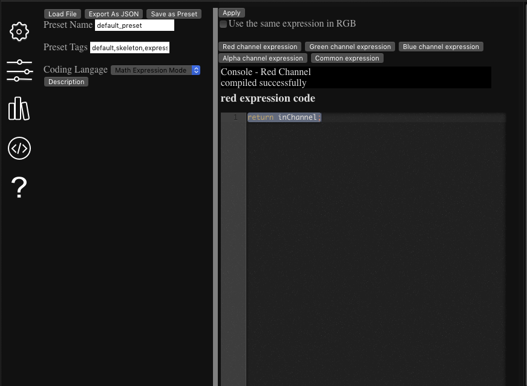
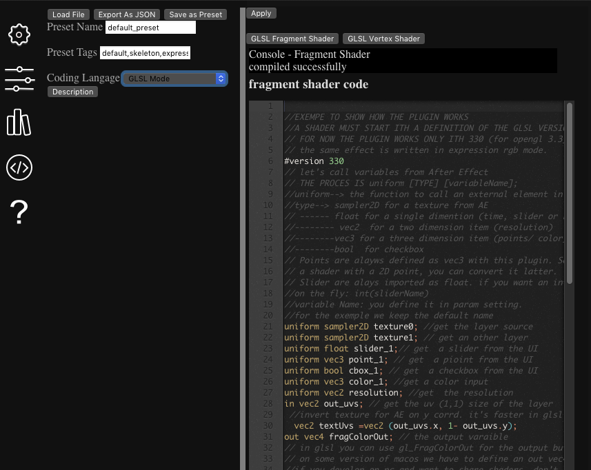
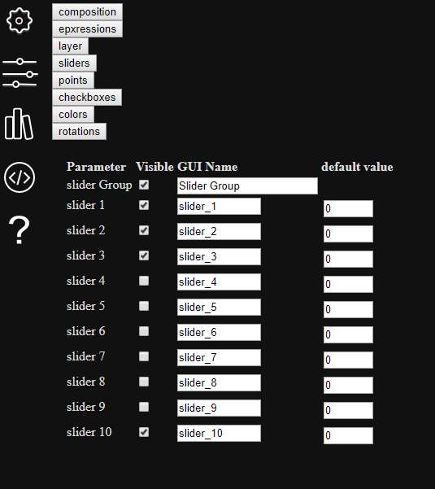
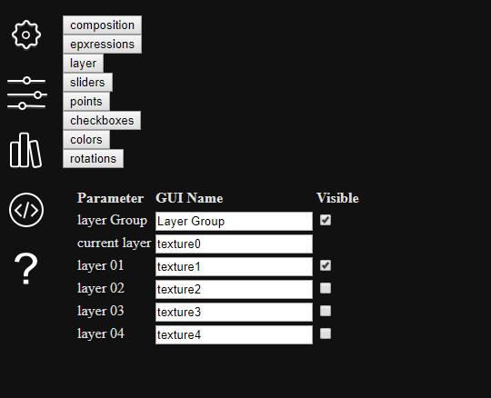
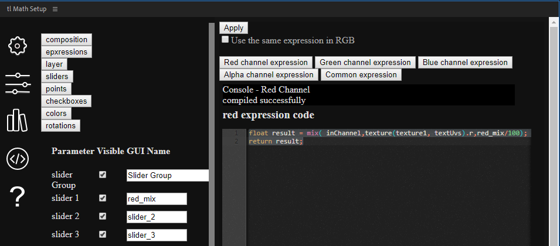

description :
|
|
|
|
|
|
|
|
tl Math Wiki.
Tl Math Copyright (C) 2020 Thomas Laforge
The code contains:
- json for modern c++ by Niels Lohmannnhttps://github.com/nlohmann
- ace.js library https://github.com/ajaxorg/ace
- Shadertoy examples with their own licenses https://shadertoy.com
Table of contents
1-What is tl Math?
2-What is GLSL?
3-Is it possible to load a preset without coding?
4-Quick menu overview
5-Expression vs full Shader
6-Write an expression step by step
7-Write a full shader step by step
1-What is tlMath?
tlMath is an After Effect Hybrid add-on. With this add-on you can write your own effects filters or generator, using the GLSL language (a lot documented on the web) and the After Effect GUI. tlMath also contains some presets, so if your afraid with code, use it as an effect library.
Hybrid means there is a plug-in side and a panel side. The plug-in interprets GLSL shaders, convert them to Effects, with customizable parameters. Through the panel side you can:
access the library
write shaders
customize parameters/set up
rename and tag the preset
import and/or export it.
2- What is GLSL?
GLSL is a high level language made by the kronos Group.It's written for graphic cards and is rendered in an OpenGL context. Video games use it since 2004 and OpenGL2. it can also be find in 3d programs and in some VFX production tools, like Autodesk Flame. A web and mobile version of the language has been created: OpenGL-ES, for webGL. Each web sites about GLSL are based on this API.
The plugin uses the glsl 330 version. (witch goes with OpenGL 3.3) Don't worry most of OpenGL-ES shaders works in 330 version. Minimal requirement: After Effect CC 2017 and higher. (cc2017 is now deprecated by Adobe, but the plug-in project was based on it SDK).
Each shaders installed in the library has been tested on a low intel graphic card (intel UHD 620) in After Effect CC 2019
The wiki will teach you the basic of this language but you should have a look to some nice websites to learn it.
the book of shaders https://thebookofshaders.com In my opinion it's one of the best to enter in GLSL's world.
shadertoy www.shadertoy.com. It's the best library of shader. There are all type of shaders, from basic to complex. One of the creator team, Inigo Quilez has made a nice video tutorial for beginner https://www.youtube.com/watch?v=0ifChJ0nJfM. Inside shadertoy there is also a nice tutorial to read/apply https://www.shadertoy.com/view/Md23DV
glsl-Sandbox http://glslsandbox.com It's also a library but without search engine. So you can navigate to explore and find something randomly.
logik matchbook https://logik-matchbook.org. This website has a lot of glsl shaders written for Autodesk Flame, but easily adaptable in the plug-in. (some of the library are based on shaders from this library themselves inspired by Shadertoy's shaders.)
3-Is it possible to load a preset without coding ?
Yes it's possible. When the setup is loaded, the first window you see is a library. You can select a preset and click on the "load and apply" button. You’ll find more details in the next section on the library menu.
4-Quick menu overview
1. The plug-in.
When you apply the plug-in on a layer, you get a result like that:

In the example, the effect is applied on a white solid. The result is the same.
First look
You get several parameters:
3 button, 10 sliders, 10 points, 10 colors, 10 rotations and 4 layers.
But you have to configure them first, if not,
those parameters do nothing, until you enter in the setup.
Let’s take a closer look at the 3 buttons
Setup : will call the panel, to load, or to edit/write a preset.
Effect description: Print the description of the preset. (read-only)
Reset preset: similar to After Effect reset button. hy this button? Because the after effect reset button will reset to the default preset inside the plug-in. Here, this button will keep your chosen preset and will reset to the preset's default values, defined in the panel.
2. The Panel.
When you open the panel, Either though the setup or the After Effect extension menu you'll get something like this:

The column on the left is the menu access
- The library (default menu): the opened menu when you launch the panel. In this menu, you can look at the list of preset, made by default or presets you added in the library. The search bar can help you to search by name and by tags.
The selected preset can be loaded and apply in After Effect, clicking on "Load and Apply".
Or if you want to code, you can send it to the editor by clicking on "Open in Editor".
The Preset Setting.

In this menu:
- Write your preset name. It's not the file name but the name shown in library and in the plugin GUI.
Special characters will be deleted if you use one of them.
Choose tags used with the search engine.
Choose the coding language. You can choose the coding language mode between glsl330, (you will have to write the full shader) and the expression. Look at section 5-Expression vs full Shader for more informations.
** Description: Edit text to write the description of the preset, Limited to 2048 characters.
The Parameters Setting. In this menu:

You define the name, and the default values when possible for each variables input in the GLSL code, coming from after effect.
composition settings. Those parameters are coming from the after effect's composition, so you cannot set default values, but you can write the name to identify it in the code.
Parameter name | Type of variable | Function ------------ | ------------- | ------------- time in seconds | vec2 | returns the layer time in seconds time in frames | vec2 | returns the layer time in frames frame rate | float | returns the layer frame rate resolution | vec2 | returns the resolution of the layer layer position | vec3 | returns the position of the layer in the composition layer scale | vec3 | returns the scale of the layer comp resolution | vec2 | returns the resolution of the composition camera position| vec3 | returns the position of the camera in the composition world camera target| vec3 | returns the position of the camera's target in the composition world camera rotation| vec3 | returns the rotation of the camera in the composition world camera zoom| vec3 | returns the camera's zoom value
- expressions settings. As for composition settings, you cannot set default vaues but you can write the name.
Parameter name | Type of variable | Function ------------ | ------------- | ------------- current channel | float | In expression splited mode, returns the current channel (from the input) rgb channels | vec3| In expression RGB mode, returns the rgb channel (from the input) Pixel Coordinates | vec2 | In both expression modes, returns the pixel coordinate, equivalent of gl_FragCoord.
layer settings. Choose the name for each layers (until 4 external layers and the source layer) and if the layer is visible in the plug-in part.
Sliders settings. You can write the name you want to the sliders, the default value (1 dimension) and if it's visible or not. (If not used, why showing it?). a slider can take a float value between -1000 and 1000, but the visible values are between 0 and 100, in floating points.
Points settings. You can write the name you want to the points, the default values (3 dimensions) and if it's visible or not. (If not used, why showing it?). vec3 value
Checkboxes settings. You can write the name you want to the checkboxes, the default value (1 dimension) and if it's visible or not. (If not used, why showing it?).bool value
Colour settings. You can write the name you want to the colour settings, the default values (3 dimensions) and if it's visible or not. (If not used, why showing it?).vec3 value
Rotation settings. You can write the name you want to the rotation settings, the default value (1 dimension) and if it's visible or not. (If not used, why showing it?). float value
- The Editor Menu. If you want to code, this menu is for you. Based on ace.js library, the editor highlight the GLSL grammar. On the GUI side, you can have only the editor on the screen, or split with the others menu on the left side. Depending of your choice about the mode, the editor will have different window.
 expression group rgb mode
 epxression split rgb mode
 glsl mode
5-Basic rules of GLSL The GLSL grammar is similar to the C language but with some restrictions and some specifics (and nice) things. The plug-in uses two shaders, the first is vertex shader, and the second the fragment shader. There are other types of shaders in opengl world (geometry shaders, compute shaders and other stuff), but for now the plug-in use only vertex and fragment shaders.
* The vertex shaders is applied on each vertices loaded by opengl. For now, the plug-in send only a 2d image, with 4 vertices so in this version vertex shader are a bit limited. (version 1.15), but with 3d models vertex shader is used to apply displacement, deformation etc. The vertex shader cannot add vertices, or delete it can only change existing things.
* The fragment shader (also called pixel shader) is applied on the pixels, it's the last step. Most of the works happen here.
* As in C language, the GLSL language has variables, (global or local), functions, conditions etc.
* Swizzling: you can easy swizzle some glsl variable. For example you got the **resolution** of the image. it's type of **vec2** that means this variable has two dimensions of type float. you can write resolution.x to get only the first dimension, resolution.y to access the second or resolution.xy for both. It's possible to do the same with colors. For exemple you get a **vec3 color** variable. You want to access to the red channel: color.r, the green color.g and blue color.b. the alpha channel is the last one.
* Think with normalized values. Whatever your color-space in After Effect, the color-space in glsl is in floating values between 0 and 1. The plug-in does the conversion in input and in output. Also when you do some image offset, displacement, you'll often have to convert values from parameters like points to normalized values. Look at the step by step example or the rgb_offset preset
* In openGL word the origin of the image (with (0,0) coordinates) is at the down left point of the image, in After Effect is on the top left. The examples show how to do the conversion.
6-Expression mode vs full Shader mode
The both mode are written in GLSL. So why two modes ? At the origin, the plug-in was imagined to rights some short expressions for the pixel worlds. But the first experiments were two slow working on the CPU side. So the plug-in switched to the GPU side, faster to interpret high level language, here the GLSL. But the plug-in still has an objective to be used by no professional coders, the same users of the after effect expressions world.
⚠️ In version 1.15, vertex shaders operation are very limited, so shouldn't use it for now. But in the future some new parameters will be there to play like on /www.vertexshaderart.com/
To sum up:
The Expression mode is for you if:
- you begin in the GLSL world
- you like few lines of expression and don't want to import variable
- your shader have few functions or an be written in one
- you want to affect quickly each colour channels separately.
- you want to do some experiences
- ⚠️ In expression Mode, use common part to write functions, it s not possible in channel's expression.
The full shader models for you if:
- you're a GLSL coder.
- you're not afraid of lots of lines
- you want to adapt a shader from a website
Expression channel | return expected | Function ------------ | ------------- | ------------- red channel | float | the expression for the red channel green channel | float | the expression for the green channel blue channel | float | the expression for the blue channel alpha channel | float | the expression for the alpha channel rgb channel | vec3 | the expression for the rgb channels
shader | return expected | Function ------------ | ------------- | ------------- vertex shader | vec4 (and vec2 uv) | the vertex shader. First operation in glsl. calculates gl_position and send informations to fragment shader. In V 1.15 yo can work only with four vertices, so a bit limited but a setting is coming to add more. fragment shader | vec4 | Output the RGBA channel. For now the main part of the work appends here. (v1.15)
7-Write an expression step by step
EXERCISE I
In the first example we'll write a basic mix preset, to mix two layers, with an influence for each channel. The final result is in the library: tuto_mixer preset.
- Open the default preset
- First of all, in preset setting choose "Math Expression Mode"
- At the top the editor menu, uncheck the checkbox "Use the same expression in RGB"
- In parameters we need to access to one other layer (hide the three others), and we need three sliders. And we can hide the others. (hid points, checkboxes, rotations, color etc).  
let's start in red channel expression
At the origin, your expression looks like that.
return inChannel;
Each expression much finish by return [float]. Only float variable are accepted. "inChannel" is the default name to get the input of the channel. In other words, this expression returns the same image as in input.
Now replace "inChannel" by slider_1 in the expression
return slider_1;
By default slider1 is on 0 so no red channel. but if you push the slider higher than 1, you'll get the full value of red (if you're in 8bits you'll get 255, if you're in 16, 32768 and 1 in 32 bits). So let's normalize the slider1 value.
return slider_1/100;
In the plug-in part, the slider is limited to 100 in visible value, (and 1000 is the max). So for the user it's nicer to get a percent value. if the slider is set to 100, the red values is the maximum, 0 is the minimum. It's nice but only one color on the screen is a bit poor so let's import an other source layer. By default, the source layer is called texture0, the first new layer texture1 etc... To load a texture use the function texture(sampler2D, UV).
*The sampler2D is the content of the texture, coming from after effect. In expression mode, you don't have to import it, just use the chosen name in parameter settings.("texture1").
*the UV: the pixel coordinate in the image, it's a normalized value. (expected between 0 and 1) From after Effect the plug-in give out_uvs function and textUvs. What are the differences ? textUvs convert the y coordinates from the After Effect world to opengl world. (so it's flopped vertically).
⚠️ the texture function returns a vec4(red,green,blue,alpha).Don't forget we have to load only one channel of the texture get a float value, so we need the red channel only.
float result = texture(texture1, textUvs).r;
return result;
We now got a copy of the red channel from the other layer. make a mix (equivalent of over merge) with an influence from the slider.
the mix function works with any types of variables, but they have to be same types. The last value is type of float. We'll use the slider as influence. mix (source1, source2, float);
float result = mix( inChannel,texture(texture1, textUvs).r,slider_1/100);
return result;
Let's change the same "slider1" to "redmix". Go to the parameter settings menu. Click on sliders button and replace the name. If you want to have fun, you can call it "john". special characters except underscore are forbidden and may have conflict in GLSL part. Set the default value to 50. We have to update the expression :
float result = mix( inChannel,texture(texture1, textUvs).r,red_mix/100);
return result;

To finish, we also rename the two others "greenmix" and "bluemix". Let's set default values to 50.
The last part of the first exercise: do the same in rgb expression mode. We have to output a vec3 value and in one block of expression.
-vec4 layer= texture(texture1, textUvs);//load the texture from the second layer.
-vec3 newLayer = vec3(0.0); // create a black screen. In GLSL if you want to set the same value on the dimensions of a vector you can do vec(x) (val). x is the dimension of the vector and val the value to set for each dimension. The value must be defined as floating.
-let's do the same as in split expression mode: mix each channel. Note the channel from the source layer is called inputRgb (you can change it in parameter settings). it's a vec3 returning the rgb values.
-return newLayer; //finish returning the mix value.
vec4 layer= texture(texture1, textUvs);
vec3 newLayer = vec3(0.0);
newLayer.r = mix( inputRgb.r, layer.r ,red_mix/100);
newLayer.g = mix( inputRgb.g, layer.g ,green_mix/100);
newLayer.b = mix( inputRgb.b, layer.b ,blue_mix/100);
return newLayer;